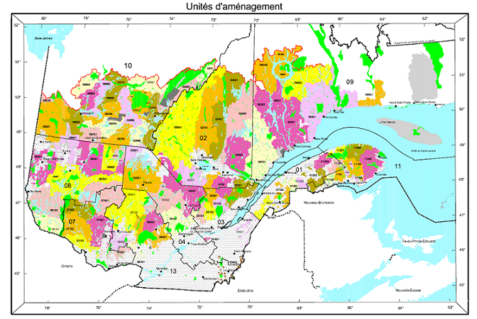
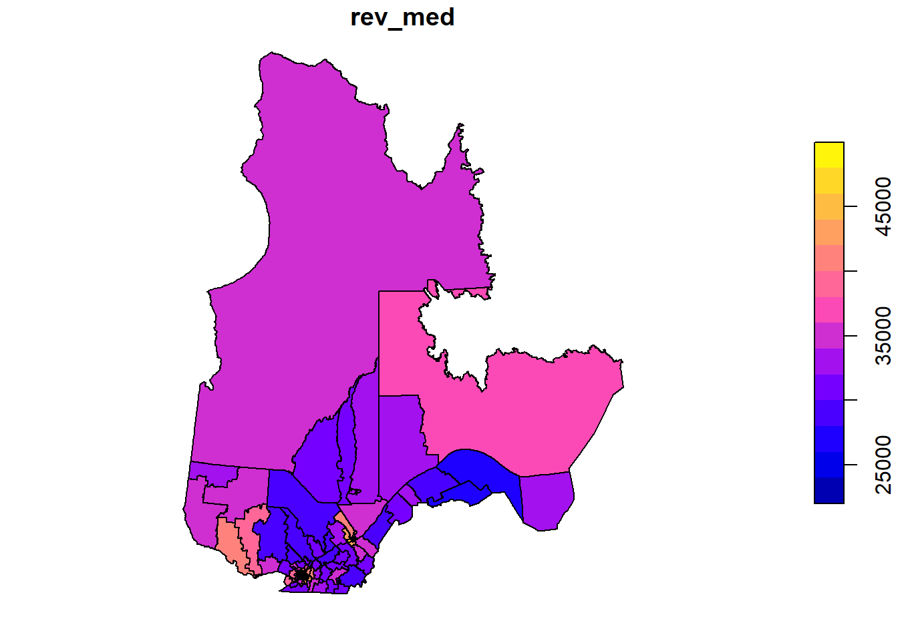
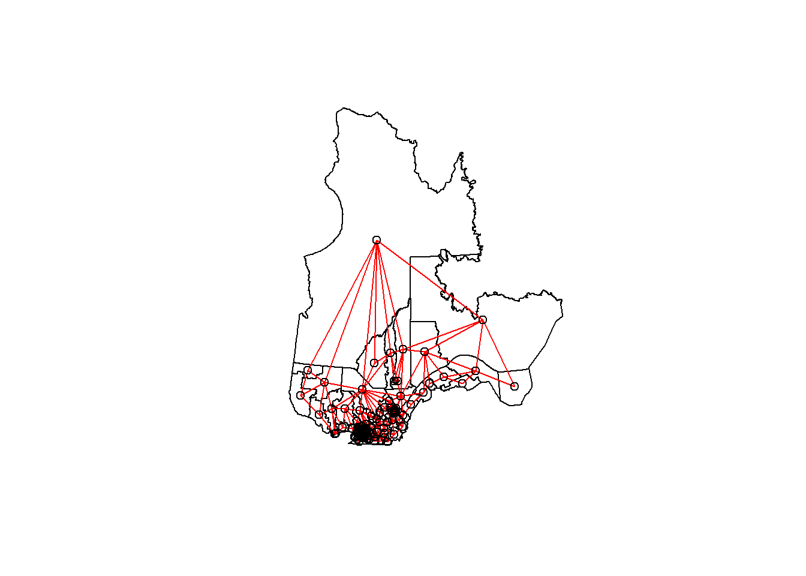
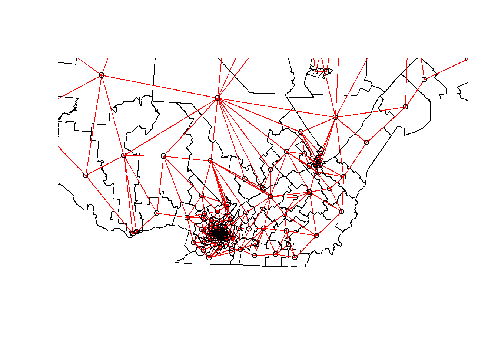

Areal data are variables measured for regions of space, defined by polygons. This type of data is more common in the social sciences, human geography and epidemiology, where data is often available at the scale of administrative divisions.
This type of data also appears frequently in natural resource management. For example, the following map shows the forest management units of the Ministère de la Forêt, de la Faune et des Parcs du Québec.

Suppose that a variable is available at the level of these management units. How can we model the spatial correlation between units that are spatially close together?
One option would be to apply the geostatistical methods seen before, for example by calculating the distance between the centers of the polygons.
Another option, which is more adapted for areal data, is to define a network where each region is connected to neighbouring regions by a link. It is then assumed that the variables are directly correlated between neighbouring regions only. (Note, however, that direct correlations between immediate neighbours also generate indirect correlations for a chain of neighbours).
In this type of model, the correlation is not necessarily the same from one link to another. In this case, each link in the network can be associated with a weight representing its importance for the spatial correlation. We represent these weights by a matrix \(W\) where \(w_{ij}\) is the weight of the link between regions \(i\) and \(j\). A region has no link with itself, so \(w_{ii} = 0\).
A simple choice for \(W\) is to assign a weight equal to 1 if the regions are neighbours, otherwise 0 (binary weight).
In addition to land divisions represented by polygons, another example of areal data consists of a grid where the variable is calculated for each cell of the grid. In this case, a cell generally has 4 or 8 neighbouring cells, depending on whether diagonals are included or not.
Before discussing spatial autocorrelation models, we present Moran’s \(I\) statistic, which allows us to test whether a significant correlation is present between neighbouring regions.
Moran’s \(I\) is a spatial autocorrelation coefficient of \(z\), weighted by the \(w_{ij}\). It therefore takes values between -1 and 1.
\[I = \frac{N}{\sum_i \sum_j w_{ij}} \frac{\sum_i \sum_j w_{ij} (z_i - \bar{z}) (z_j - \bar{z})}{\sum_i (z_i - \bar{z})^2}\]
In this equation, we recognize the expression of a correlation, which is the product of the deviations from the mean for two variables \(z_i\) and \(z_j\), divided by the product of their standard deviations (it is the same variable here, so we get the variance). The contribution of each pair \((i, j)\) is multiplied by its weight \(w_{ij}\) and the term on the left (the number of regions \(N\) divided by the sum of the weights) ensures that the result is bounded between -1 and 1.
Since the distribution of \(I\) is known in the absence of spatial autocorrelation, this statistic serves to test the null hypothesis that there is no spatial correlation between neighbouring regions.
Although we will not see an example in this course, Moran’s \(I\) can also be applied to point data. In this case, we divide the pairs of points into distance classes and calculate \(I\) for each distance class; the weight \(w_{ij} = 1\) if the distance between \(i\) and \(j\) is in the desired distance class, otherwise 0.
Let us recall the formula for a linear regression with spatial dependence:
\[v = \beta_0 + \sum_i \beta_i u_i + z + \epsilon\]
where \(z\) is the portion of the residual variance that is spatially correlated.
There are two main types of autoregressive models to represent the spatial dependence of \(z\): conditional autoregression (CAR) and simultaneous autoregressive (SAR).
In the conditional autoregressive model, the value of \(z_i\) for the region \(i\) follows a normal distribution: its mean depends on the value \(z_j\) of neighbouring regions, multiplied by the weight \(w_{ij}\) and a correlation coefficient \(\rho\); its standard deviation \(\sigma_{z_i}\) may vary from one region to another.
\[z_i \sim \text{N}\left(\sum_j \rho w_{ij} z_j,\sigma_{z_i} \right)\]
In this model, if \(w_{ij}\) is a binary matrix (0 for non-neighbours, 1 for neighbours), then \(\rho\) is the coefficient of partial correlation between neighbouring regions. This is similar to a first-order autoregressive model in the context of time series, where the autoregression coefficient indicates the partial correlation.
In the simultaneous autoregressive model, the value of \(z_i\) is given directly by the sum of contributions from neighbouring values \(z_j\), multiplied by \(\rho w_{ij}\), with an independent residual \(\nu_i\) of standard deviation \(\sigma_z\).
\[z_i = \sum_j \rho w_{ij} z_j + \nu_i\]
At first glance, this looks like a temporal autoregressive model. However, there is an important conceptual difference. For temporal models, the causal influence is directed in only one direction: \(v(t-2)\) affects \(v(t-1)\) which then affects \(v(t)\). For a spatial model, each \(z_j\) that affects \(z_i\) depends in turn on \(z_i\). Thus, to determine the joint distribution of \(z\), a system of equations must be solved simultaneously (hence the name of the model).
For this reason, although this model resembles the formula of CAR model, the solutions of the two models differ and in the case of SAR, the coefficient \(\rho\) is not directly equal to the partial correlation due to each neighbouring region.
For more details on the mathematical aspects of these models, see the article by Ver Hoef et al. (2018) suggested in reference.
For the moment, we will consider SAR and CAR as two types of possible models to represent a spatial correlation on a network. We can always fit several models and compare them with the AIC to choose the best form of correlation or the best weight matrix.
The CAR and SAR models share an advantage over geostatistical models in terms of efficiency. In a geostatistical model, spatial correlations are defined between each pair of points, although they become negligible as distance increases. For a CAR or SAR model, only neighbouring regions contribute and most weights are equal to 0, making these models faster to fit than a geostatistical model when the data are massive.
To illustrate the analysis of areal data in R, we load the packages sf (to read geospatial data), spdep (to define spatial networks and calculate Moran’s \(I\)) and spatialreg (for SAR and CAR models).
library(sf)
library(spdep)
library(spatialreg)As an example, we will use a dataset that presents some of the results of the 2018 provincial election in Quebec, with population characteristics of each riding. This data is included in a shapefile (.shp) file type, which we can read with the read_sf function of the sf package.
elect2018 <- read_sf("data/elect2018.shp")
head(elect2018)## Simple feature collection with 6 features and 9 fields
## geometry type: MULTIPOLYGON
## dimension: XY
## bbox: xmin: 97879.03 ymin: 174515.3 xmax: 694261.1 ymax: 599757.1
## proj4string: +proj=lcc +lat_1=46 +lat_2=50 +lat_0=44 +lon_0=-70 +x_0=800000 +y_0=0 +datum=NAD83 +units=m +no_defs
## # A tibble: 6 x 10
## circ age_moy pct_frn pct_prp rev_med propCAQ propPQ propPLQ propQS
## <chr> <dbl> <dbl> <dbl> <int> <dbl> <dbl> <dbl> <dbl>
## 1 Abit~ 40.8 0.963 0.644 34518 42.7 19.5 18.8 15.7
## 2 Abit~ 42.2 0.987 0.735 33234 34.1 33.3 11.3 16.6
## 3 Acad~ 40.3 0.573 0.403 25391 16.5 9 53.8 13.8
## 4 Anjo~ 43.5 0.821 0.416 31275 28.9 14.7 39.1 14.5
## 5 Arge~ 43.3 0.858 0.766 31097 38.9 21.1 17.4 12.2
## 6 Arth~ 43.4 0.989 0.679 30082 61.8 9.4 11.4 12.6
## # ... with 1 more variable: geometry <MULTIPOLYGON [m]>Note: The dataset is actually composed of 4 files with the extensions .dbf, .prj, .shp and .shx, but it is sufficient to write the name of the .shp file in read_sf.
The columns of the dataset are, in order:
circ);age_moy = mean age, pct_frn = fraction of the population that speaks mainly French at home, pct_prp = fraction of households that own their home, rev_med = median income);geometry column that contains the geometric object (multipolygon) corresponding to the riding.To illustrate one of the variables on a map, we call the plot function with the name of the column in square brackets and quotation marks.
plot(elect2018["rev_med"])
In this example, we want to model the fraction of votes obtained by the CAQ based on the characteristics of the population in each riding and taking into account the spatial correlations between neighbouring ridings.
The poly2nb function of the spdep package defines a neighbourhood network from polygons. The result vois is a list of 125 elements where each element contains the indices of the neighbouring (bordering) polygons of a given polygon.
vois <- poly2nb(elect2018)
vois[[1]]## [1] 2 37 63 88 101 117Thus, the first riding (Abitibi-Est) has 6 neighbouring ridings, for which the names can be found as follows:
elect2018$circ[vois[[1]]]## [1] "Abitibi-Ouest" "Gatineau"
## [3] "Laviolette-Saint-Maurice" "Pontiac"
## [5] "Rouyn-Noranda-Témiscamingue" "Ungava"We can illustrate this network by extracting the coordinates of the center of each district, creating a blank map with plot(elect2018["geometry"]), then adding the network as an additional layer with plot(vois, add = TRUE, coords = coords).
coords <- st_centroid(elect2018) %>%
st_coordinates()
plot(elect2018["geometry"])
plot(vois, add = TRUE, col = "red", coords = coords)
We can “zoom” on southern Québec by choosing the limits xlim and ylim.
plot(elect2018["geometry"],
xlim = c(400000, 800000), ylim = c(100000, 500000))
plot(vois, add = TRUE, col = "red", coords = coords)
We still have to add weights to each network link with the nb2listw function. The style of weights “B” corresponds to binary weights, i.e. 1 for the presence of link and 0 for the absence of link between two ridings.
Once these weights are defined, we can verify with Moran’s test whether there is a significant autocorrelation of votes obtained by the CAQ between neighbouring ridings.
poids <- nb2listw(vois, style = "B")
moran.test(elect2018$propCAQ, poids)##
## Moran I test under randomisation
##
## data: elect2018$propCAQ
## weights: poids
##
## Moran I statistic standard deviate = 13.148, p-value < 2.2e-16
## alternative hypothesis: greater
## sample estimates:
## Moran I statistic Expectation Variance
## 0.680607768 -0.008064516 0.002743472The value \(I = 0.68\) is very significant judging by the \(p\)-value of the test.
Let’s verify if the spatial correlation persists after taking into account the four characteristics of the population, therefore by inspecting the residuals of a linear model including these four predictors.
elect_lm <- lm(propCAQ ~ age_moy + pct_frn + pct_prp + rev_med, data = elect2018)
summary(elect_lm)##
## Call:
## lm(formula = propCAQ ~ age_moy + pct_frn + pct_prp + rev_med,
## data = elect2018)
##
## Residuals:
## Min 1Q Median 3Q Max
## -30.9890 -4.4878 0.0562 6.2653 25.8146
##
## Coefficients:
## Estimate Std. Error t value Pr(>|t|)
## (Intercept) 1.354e+01 1.836e+01 0.737 0.463
## age_moy -9.170e-01 3.855e-01 -2.378 0.019 *
## pct_frn 4.588e+01 5.202e+00 8.820 1.09e-14 ***
## pct_prp 3.582e+01 6.527e+00 5.488 2.31e-07 ***
## rev_med -2.624e-05 2.465e-04 -0.106 0.915
## ---
## Signif. codes: 0 '***' 0.001 '**' 0.01 '*' 0.05 '.' 0.1 ' ' 1
##
## Residual standard error: 9.409 on 120 degrees of freedom
## Multiple R-squared: 0.6096, Adjusted R-squared: 0.5965
## F-statistic: 46.84 on 4 and 120 DF, p-value: < 2.2e-16moran.test(residuals(elect_lm), poids)##
## Moran I test under randomisation
##
## data: residuals(elect_lm)
## weights: poids
##
## Moran I statistic standard deviate = 6.7047, p-value = 1.009e-11
## alternative hypothesis: greater
## sample estimates:
## Moran I statistic Expectation Variance
## 0.340083290 -0.008064516 0.002696300Moran’s \(I\) has decreased but remains significant, so some of the previous correlation was induced by these predictors, but there remains a spatial correlation due to other factors.
Finally, we fit SAR and CAR models to these data with the spautolm (spatial autoregressive linear model) function of spatialreg. Here is the code for a SAR model including the effect of the same four predictors.
elect_sar <- spautolm(propCAQ ~ age_moy + pct_frn + pct_prp + rev_med,
data = elect2018, listw = poids)
summary(elect_sar)##
## Call: spautolm(formula = propCAQ ~ age_moy + pct_frn + pct_prp + rev_med,
## data = elect2018, listw = poids)
##
## Residuals:
## Min 1Q Median 3Q Max
## -23.08342 -4.10573 0.24274 4.29941 23.08245
##
## Coefficients:
## Estimate Std. Error z value Pr(>|z|)
## (Intercept) 15.09421119 16.52357745 0.9135 0.36098
## age_moy -0.70481703 0.32204139 -2.1886 0.02863
## pct_frn 39.09375061 5.43653962 7.1909 6.435e-13
## pct_prp 14.32329345 6.96492611 2.0565 0.03974
## rev_med 0.00016730 0.00023209 0.7208 0.47101
##
## Lambda: 0.12887 LR test value: 42.274 p-value: 7.9339e-11
## Numerical Hessian standard error of lambda: 0.012069
##
## Log likelihood: -433.8862
## ML residual variance (sigma squared): 53.028, (sigma: 7.282)
## Number of observations: 125
## Number of parameters estimated: 7
## AIC: 881.77The value given by Lambda in the summary corresponds to the coefficient \(\rho\) in our description of the model. The likelihood-ratio test (LR test) confirms that this residual spatial correlation (after controlling for the effect of predictors) is significant.
The estimated effects for the predictors are similar to those of the linear model without spatial correlation. The effects of mean age, fraction of francophones and fraction of homeowners remain significant, although their magnitude has decreased somewhat.
To fit a CAR rather than SAR model, we must specify family = "CAR".
elect_car <- spautolm(propCAQ ~ age_moy + pct_frn + pct_prp + rev_med,
data = elect2018, listw = poids, family = "CAR")
summary(elect_car)##
## Call: spautolm(formula = propCAQ ~ age_moy + pct_frn + pct_prp + rev_med,
## data = elect2018, listw = poids, family = "CAR")
##
## Residuals:
## Min 1Q Median 3Q Max
## -21.73315 -4.24623 -0.24369 3.44228 23.43749
##
## Coefficients:
## Estimate Std. Error z value Pr(>|z|)
## (Intercept) 16.57164696 16.84155327 0.9840 0.325128
## age_moy -0.79072151 0.32972225 -2.3981 0.016478
## pct_frn 38.99116707 5.43667482 7.1719 7.399e-13
## pct_prp 17.98557474 6.80333470 2.6436 0.008202
## rev_med 0.00012639 0.00023106 0.5470 0.584364
##
## Lambda: 0.15517 LR test value: 40.532 p-value: 1.9344e-10
## Numerical Hessian standard error of lambda: 0.0026868
##
## Log likelihood: -434.7573
## ML residual variance (sigma squared): 53.9, (sigma: 7.3416)
## Number of observations: 125
## Number of parameters estimated: 7
## AIC: 883.51For a CAR model with binary weights, the value of Lambda (which we called \(\rho\)) directly gives the partial correlation coefficient between neighbouring districts. Note that the AIC here is slightly higher than the SAR model, so the latter gave a better fit.
The rls_covid dataset, in shapefile format, contains data on detected COVID-19 cases (cas), number of cases per 1000 people (taux_1k) and the population density (dens_pop) in each of Quebec’s local health service networks (RLS) (Source: Data downloaded from the Institut national de santé publique du Québec as of January 17, 2021).
rls_covid <- read_sf("data/rls_covid.shp")
head(rls_covid)## Simple feature collection with 6 features and 5 fields
## geometry type: MULTIPOLYGON
## dimension: XY
## bbox: xmin: 785111.2 ymin: 341057.8 xmax: 979941.5 ymax: 541112.7
## proj4string: +proj=lcc +lat_1=46 +lat_2=50 +lat_0=44 +lon_0=-70 +x_0=800000 +y_0=0 +datum=NAD83 +units=m +no_defs
## # A tibble: 6 x 6
## RLS_code RLS_nom cas taux_1k dens_pop geometry
## <chr> <chr> <dbl> <dbl> <dbl> <MULTIPOLYGON [m]>
## 1 0111 RLS de Ka~ 152 7.34 6.76 (((827028.3 412772.4, 827034.9 412~
## 2 0112 RLS de Ri~ 256 7.34 19.6 (((855905 452116.9, 855784.2 45198~
## 3 0113 RLS de Té~ 81 4.26 4.69 (((911829.4 441311.2, 912116.1 441~
## 4 0114 RLS des B~ 28 3.3 5.35 (((879249.6 471975.6, 879234.3 471~
## 5 0115 RLS de Ri~ 576 9.96 15.5 (((917748.1 503148.7, 917987.2 502~
## 6 0116 RLS de La~ 76 4.24 5.53 (((951316 523499.3, 952553.4 52248~Fit a linear model of the number of cases per 1000 as a function of population density (it is suggested to apply a logarithmic transform to the latter). Check whether the model residuals are correlated between bordering RLS with a Moran’s test and then model the same data with a conditional autoregressive model.
Ver Hoef, J.M., Peterson, E.E., Hooten, M.B., Hanks, E.M. and Fortin, M.-J. (2018) Spatial autoregressive models for statistical inference from ecological data. Ecological Monographs 88: 36-59.